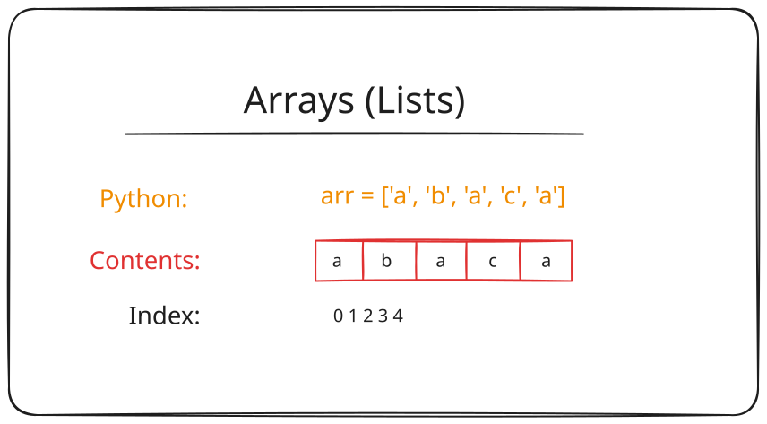

The things in the array are called elements.
Each element occupies a position in the array:
In most programming languages, the first element is at position 0. We call this a zero-based array.
List vs Array?
The term array adheres strictly to the first definition given above.
Most programming languages offer a wrapper for arrays that allows for more flexible operations such as:
Python calls these lists. We will use the term list going forward.
## Initialize an empty list
arr = []## Initialize an array with values
arr = ['a','b','c','d']## Add an element to the end of the list
arr = []
arr.append( 'a' )
# Array now contains: ['a']## Access an element by index
arr = ['a','b','c','d']
print( arr[0] ) # Will print 'a'
print( arr[1] ) # Will print 'b'## Reassign an element by index
arr = ['a','b','c','d']
arr[0] = 'z'
print( arr[0] ) # Will print 'z'We can use the “len” function to get the length of a list.
## After this code is executed the “length” variable will hold an integer
## with the number of elements of the list
arr = ['a','b','c','d']
length = len( arr )
print(length) # Will print 4## Get the last element of a list
arr = ['a','b','c','d']
last_element = arr[ len( arr ) - 1 ]
print( last_element ) # Will print 'd'We can use a counter variable to access an array element by position as we move through a loop.
arr = ['a','b','c','d']
## We can create a counter variable that we can then use to
## access an element by index - by its position within the list.
for i in range( len( arr ) ):
print( 'The current index is: ' + str(i) )
print( 'The value at this position is: ' + arr[i] )foreach loop.arr = ['a','b','c','d']
# We can call "letter" anything we want.
for letter in arr:
print( letter ) # prints: a, b, c, dStrings are an iterable collection of characters.
Anything we can do with an array, we can do with a string.
long_word = ['Acetylcholinergic neurotransmission',]
for letter in long_word:
print( letter )Write a program that prompts the user to enter an animal name. Then prompt to enter a second animal name. If the entries are the same print “Match”, otherwise print “Not a match”.
Get the Nth element from a list
Get the top N first/last elements from a list
Get every Nth element from a list
Algorithm:
More efficient than linear search, but the array must be sorted.
Algorithm: